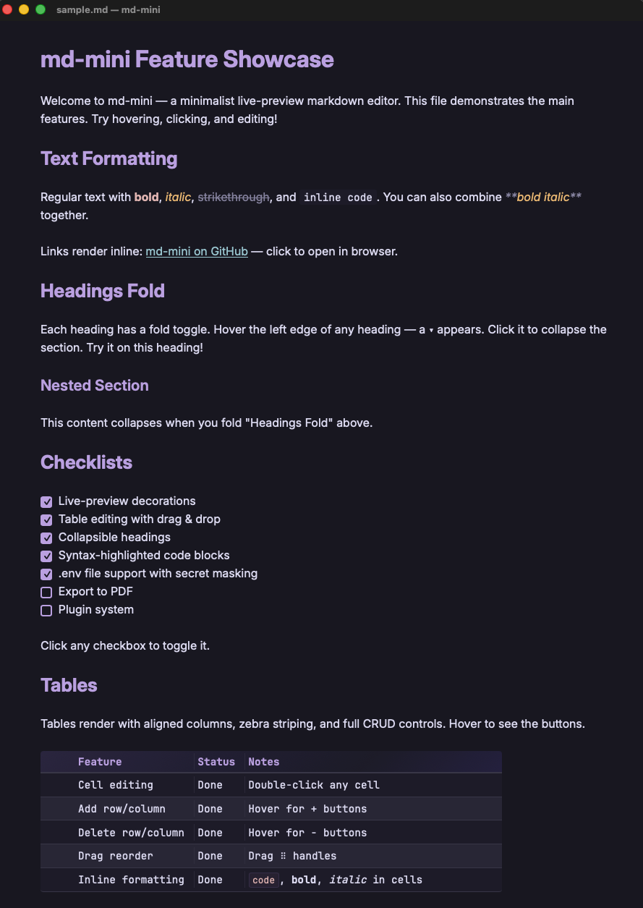

A minimalist live-preview markdown editor for macOS. Lightweight, fast, and distraction-free.

.env files are blurred by default. Click to reveal.mdmini file.md.```mermaid blocks render as inline SVG diagramsbrew update prefix.env values blurred by defaultmdmini file.md via Homebrew tap